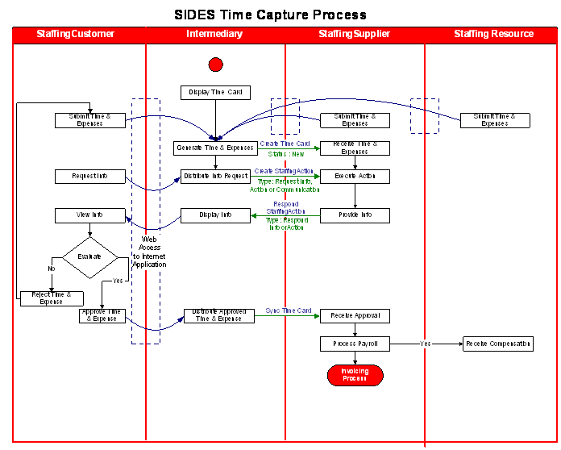
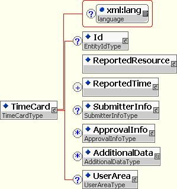
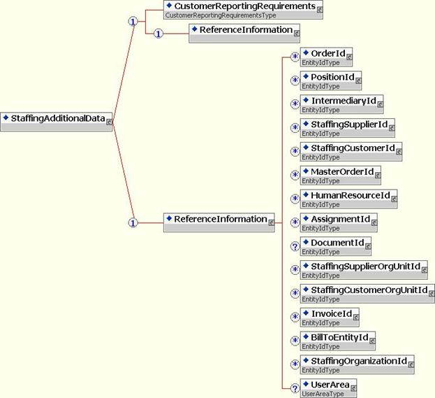

Extended TimeCard
Recommendation, 2007 April 15
Editors:
Kim Bartkus, HR-XML Consortium
Contributors:
Gail Bubsey (Kelly Services ), Kim Bartkus (HR-XML Consortium), Barbara Johnson (Adecco NA), Tara Ryan (Adecco), Kazuko Sugamura (Manpower Japan), Takahiro Fujiwara (EAST Co., Ltd.), Magali Munoz (Manpower France), Bruno Alcotte (Manpower France), Rémy Bailly (Randstad), Yves Berdah (VidiorBis), Serguei Dounaevetski (Manpower France), Patrice Aranega (Adecco France)
Copyright © 2007 HR-XML Consortium, Inc.
Abstract
The HR-XML SIDES Workgroup has produced 7 major schemas and several reusable modules to allow for transmission of Staffing Industry information between trading partners. This document describes the TimeCardAdditionalData schema, its expected usage, and the business processes meant to be supported.
Table of Contents
3 Extensions for Use with SIDES
5 Implementation Considerations
6 Appendix A - Document Version History
7 Appendix B – Related Documents
1 Overview
Changes were made to the base SIDES specification based on feedback from the European and Japanese Chapters. If available, localized items are documented in section 4 Implementation Considerations or in individual country documentation. Refer to Appendix A - Document Version History for details.
1.1 Objective
SIDES uses the HR-XML Timecard schema, which supports extensions as described in section 3 (Extensions for Use with SIDES). The objective of the TimeCard schema is:
"… to provide a simple definition of the elements required to report time worked and expenses incurred. Future versions are expected to allow for more sophisticated definition of tasks and expenses, however, this initial definition is flexible enough to handle typical ways that time worked is expressed, plus a simple format for the representation of expenses.
Time worked is typically expressed in the following ways:
- Time Events – Defined as a timestamp that marks the occurrence of a particular event. (e.g. 8am began working)
- Time Intervals – Defined as an expression of time to be paid or billed at a particular rate on a specific date during which a particular type of work was done. The time might be expressed as a total quantity, for example, on 7/1/01 worked 4 hours at 20.00 USD, regular, billable-hours on Project A. Or time could be expressed as an interval, for example 8am to 1pm, during which a particular activity took place.
· Expenses Incurred – Defined as a reimbursable amount incurred while working on assignment or project. Includes date, value and currency indicator and additional data (e.g. On 7/1/01 incurred 25.00 USD Non-Billable Meal Expense)."
This release reflects the Sides 1.1 updates to the ReferenceInformation and CustomerReportingRequirements modules. See SIDESReusableModules (Appendix B – Related Documents) for details on the CustomerReportingRequirements changes.
2 Business Process
The Time Capture business process shown below is meant to generically capture the concept of a web-based time capture system. In the example, it shows how a third party would do this. However, Time Capture may be done at the staffing customers site, for example through a personal computer, a shop floor kiosk or HR-XML enabled time clock, by IVR telephone which provides an HR-XML feed to a back-office system. Such systems, which gather time from various sources, usually involve process approvals from the staffing customer then transfer the time records to a staffing supplier’s back office system for payroll and invoice processing.
In the example the following steps are performed:
· The web-based application is given sufficient information about an assignment to make a screen based “time card” available to the appropriate party – usually the staffing resource, but also the staffing supplier or staffing customer, could fill out a time card, depending on the particulars of the assignment.
· Once the time card has been created it is submitted to the staffing customer for approval and from there, in its approved form to the staffing supplier. However, the staffing supplier may require unapproved time-card data as there may exist a requirement to satisfy its wage and hour law obligations whether or not the staffing customer approval process takes place in a timely manner.
· There is the possibility of an exchange of data between the staffing customer and staffing supplier – perhaps a request for more information about a particular staffing resource’s hours worked or expenses claimed.
After approval has occurred, the time record is now sent to the staffing supplier. In the example below, it is accompanied by the SYNC verb as part of the messaging format. If done in this way and in a timely manner, this approved record could overwrite the previous, unapproved version and payroll and invoicing processing can proceed as usual.

3 Extensions for Use with SIDES
The TimeCardAdditionaData schema declares the SIDES-specific elements that are included in the TimeCard schema via the <AdditionalData> ANY element. For consistency throughout an entire SIDES process implementation, it is important that these extensions are used. Further details are available in the Staffing Invoice document (See StaffingInvoice Appendix B – Related Documents). The following modules are included within the TimeCardAdditionalData schema:
· ReferenceInformation - much of the SIDES data exchange depends upon the trading and tracking of various IDs. This module allows the use of any or all of the defined IDs without introducing the confusion of inconsistent element names. Currently defined IDs are:
· OrderId
· PositionId
· IntermediaryId
· StaffingSupplierId
· StaffingCustomerId
· StaffingSupplierOrgUnitId
· StaffingCustomerOrgUnitId
· MasterOrderId
· HumanResourceId
· AssignmentId
· DocumentId
· InvoiceId
· BillToEntityId
· Use of the CustomerReportingRequirements module.
4 Schema Design
4.1 Schema Diagram
High level diagrams for the TimeCard and the full StaffingAdditionalData schema are shown below. See SIDESReusableModules (Appendix B – Related Documents) for details on the CustomerReportingRequirements module.


4.2 Data Dictionary
|
Elements and Attributes [Global types listed alphabetically in following table.] |
ContentModel* |
Definition ** |
|
/ |
CustomerReportingRequirements - [see include/import] - S
(1/1) |
Contains SIDES related
identifiers relating to the time card. |
|
/ StaffingAdditionalData/ |
OrderId - EntityIdType - (see
ReferenceInformation group occurrence) StaffingOrganizationId - EntityIdType - (see ReferenceInformation group occurrence) UserArea - [see include/import] - S (0/1) |
Contains reference information (a group of id's) regarding other business entities or transactions. |
|
/ StaffingAdditionalData/
ReferenceInformation/ |
- EntityIdType - (see ReferenceInformation group occurrence) |
Unique identifier for a staffing order. |
|
/ StaffingAdditionalData/
ReferenceInformation/ |
- EntityIdType - (see ReferenceInformation group occurrence) |
Reference to a uniquely identifiable position. |
|
/ StaffingAdditionalData/
ReferenceInformation/ |
- EntityIdType - (see ReferenceInformation group occurrence) |
Unique identifier for a Vendor Management System or 3rd party responsible for staffing management |
|
/ StaffingAdditionalData/
ReferenceInformation/ |
- EntityIdType - (see ReferenceInformation group occurrence) |
Unique id used to identify the staffing supplier. |
|
/ StaffingAdditionalData/
ReferenceInformation/ |
- EntityIdType - (see ReferenceInformation group occurrence) |
Unique id used to identify the staffing customer. |
|
/ StaffingAdditionalData/ ReferenceInformation/ |
- EntityIdType - (see ReferenceInformation group occurrence) |
Reference to a master order or project. Used to link multiple orders. |
|
/ StaffingAdditionalData/
ReferenceInformation/ |
- EntityIdType - (see ReferenceInformation group occurrence) |
[Definition Deprecated:
Reference to a specific HumanResource. ] |
|
/ StaffingAdditionalData/
ReferenceInformation/ |
- EntityIdType - (see ReferenceInformation group occurrence) |
Identifier of the assignment
eventually agreed to by the trading partners. |
|
/ StaffingAdditionalData/
ReferenceInformation/ |
- EntityIdType - (see ReferenceInformation group occurrence) |
A unique identifier for a particular document. Context definition: A unique identifier for a contract governance and compliance agreement between a customer and their supplier. |
|
/ StaffingAdditionalData/ ReferenceInformation/ |
- EntityIdType - (see ReferenceInformation group occurrence) |
Unique id used to identify a particular organizational unit of the staffing supplier. |
|
/ StaffingAdditionalData/
ReferenceInformation/ |
- EntityIdType - (see ReferenceInformation group occurrence) |
Unique id used to identify a particular organizational unit of the staffing customer. |
|
/ StaffingAdditionalData/
ReferenceInformation/ |
- EntityIdType - (see ReferenceInformation group occurrence) |
Unique id used to identify the Invoice. |
|
/ StaffingAdditionalData/
ReferenceInformation/ |
- EntityIdType - (see ReferenceInformation group occurrence) |
Unique id used to identify the billing information. |
|
/
StaffingAdditionalData/ ReferenceInformation/ |
- EntityIdType - (see ReferenceInformation group occurrence) |
Unique id used to identify the staffing organization. |
5 Implementation Considerations
5.1 Data Privacy
Human resources data, by its very nature, is personal data. The laws of many jurisdictions as well as codes of fair information practice require organizations to handle personal data in a way that protects individuals from loss of privacy.
The data exchange specifications developed by the HR-XML Consortium are designed to be useful across many jurisdictions and within a variety of business contexts. It is not feasible for the HR-XML Consortium to develop specific privacy guidance for every jurisdiction or business context in which the Consortium's specifications might be implemented. When implementing data exchanges using the HR-XML Consortium's data definitions (or, for that matter, using any other type of data exchange mechanism), organizations are advised to examine the privacy protections that may be required under applicable law and codes of fair information practice.
For information on protecting personal data, general references include: European Union Data Protection Directive (95/46/EC); the Association Computing Machinery Code of Ethics (1992); Canadian Standards Association Model Code for the Protection of Personal Information (1995 – PIPEDA); and U.S.-EU Safe Harbor Principles and FAQs (2000).
6 Appendix A - Document Version History
|
Date |
Description |
|
2004-Mar-04 |
Initial Draft |
|
2004-Apr-08 |
Updated diagrams, definitions, example, minor wording. |
|
2004-Jun-09 |
Updated document id definition. |
|
2004-Aug-02 |
Approved by membership. |
|
2006-Feb-28 |
Approved by Consortium |
|
2006-Jul-08 |
Added Reference Id's to match other SIDES schemas: StaffingSupplierOrgUnitId, StaffingCustomerOrgUnitId, InvoiceId, BillToEntityId, StaffingOrganizationId, and UserArea. |
|
2007-Apr-15 |
Approved by Consortium |
7 Appendix B – Related Documents